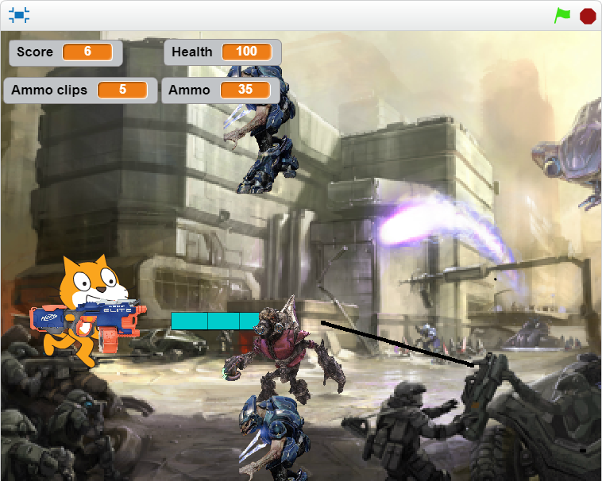

This game is an active game based off of the Halo Series. The game
can be seen as the very primitive version of Halo, as Scratch is unable
to support true first/third person gameplay of Halo. It utilizes a score
based off of how many aliens you have killed with your laser gun, and
if you reach the score of 100, you would win. However, you have health,
and the health hitting 0 means you would lose. The aliens spawn
randomly across the right side of the screen, and they will progressively
get more and more agressive to try and kill you.
Some obvious successes with the game is the optimal balancing of the game
and the functioning of the bullets. With the help of prior experience, I was
able to properly create code that properly made the bullets function and the
game not as unfair.
Some obstacles that were present while creating the game was the optimal balancing
of the entire game, as I had to constantly fiddle with the code in order to
create a sense of reward for optimal plays while punishing poor plays.
Another ostacle present was the fact that the images had to constantly be imported
over from another website and remodeled in order to be functional. I overcame
both these obstacles by accepting the fact that I had nearly no time to sleep,
and i just had to manually add and edit all of the scripts.
This is an example of a script I used. It was used for the enemies you would
encounter in the game, as it would move te enemy across the stage and dissapear
based off of where it is or what it is interacting with. It is with certainty to say it is
an algorithim due to how it utilizes multiple scripts in order to fufill the
purpose of the game engine. Also, it functions as a more block due to how it
uses multiple scripts into one compactc script as to simplify and reduce
the repetition in the code.
If I had more time, I would have utilized a reset button that would not break the other
scripts within the program. Although I had a soft reset button that would relaunch the
gameplay, it causes a fatal error where the bullets don't work as intended. I would have
also attempted to fix the hitboxes of the aliens, as they may be grazed by the bullets
or be hitting the player without disappearing. The healt bar could also be replaced with
improved visual.